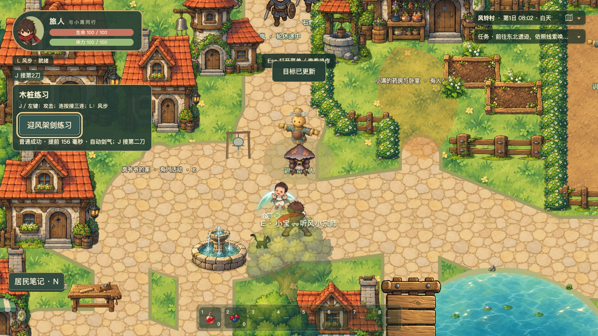

远程弹反 · 自动反斩发射剑气
孢子接触 → 成功白闪 → 红刃反斩 → 单发剑气 → 实际命中后第二次冲击。无需解锁剑风，J接第二刀；原玩法窗口保持。
录像使用实际游戏音轨、正常速度与比例。均为合法起始夹具＋真实键鼠；A类按键使用只读预测选择时机，技术通过不代表用户主观认可。设备试听尚未完成。
普通成功 · 不按J仍自动发射
技能阶段0：剑气真正飞到投影后命中24，没有额外近战伤害。
精准右键 · 停顿中预约连段
自动剑气30，主动J接第二、三刀20＋30，木桩合计80。
野外孢卫 · 远方真实命中
成功接触时敌人60生命、没有远处失衡；剑气抵达后降至36。
风步取消 · 不补发、不假命中
成功停顿中输入L，恢复点先执行风步，剑气与命中重音都不产生。
